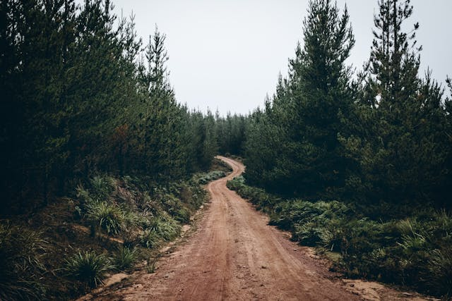

Dobogókő

A Dobogó-kő kiránduló- és üdülőhely, a Visegrádi-hegység legmagasabb hegye, tengerszint feletti magassága 700 méter. A hegycsúcson húzódik Komárom-Esztergom vármegye (Dömös) és Pest vármegye (Pilisszentkereszt) határa. A 19. század végén vált népszerű úticéllá.A hegyen található település Dobogókő néven közigazgatásilag Pilisszentkereszt része.
Rám-szakadék

Az Északi-középhegység legnyugatibb középtája a Visegrádi-hegység, kb. 14-15 millió évvel ezelőtt, igen heves vulkáni tevékenység során keletkezett. A hegy kőzeteire jellemzők a vulkáni eredetű andezit, valamint az andezittörmelékes breccsába (szögletes, éles kőzettörmelék-darabokból összecementálódott kőzet) ágyazott kőtömbök, melyekből a kőzet felszínre kerülésével az esővíz és a fagy eróziós hatásának eredményeképpen meredek völgyek alakultak ki.
Prédikálószék

A Prédikálószék a Visegrádi-hegység egyik hegye Komárom-Esztergom és Pest vármegyék határán, csúcsa éppen e megyehatár közvetlen közelében emelkedik. Északi és keleti lejtői Visegrád területére esnek, míg déli és nyugati oldala Dömös közigazgatási területén helyezkedik el. 639 méteres magasságával a Visegrádi-hegység harmadik legmagasabb pontja (a 699 méteres Dobogó-kő és a 654 méteres Öreg-vágás-hegy) mögött, a Dunazug-hegyvidéken belül a kilencedik.